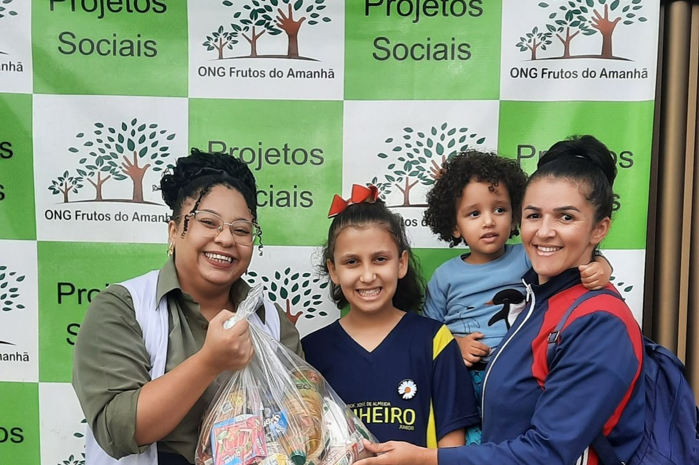
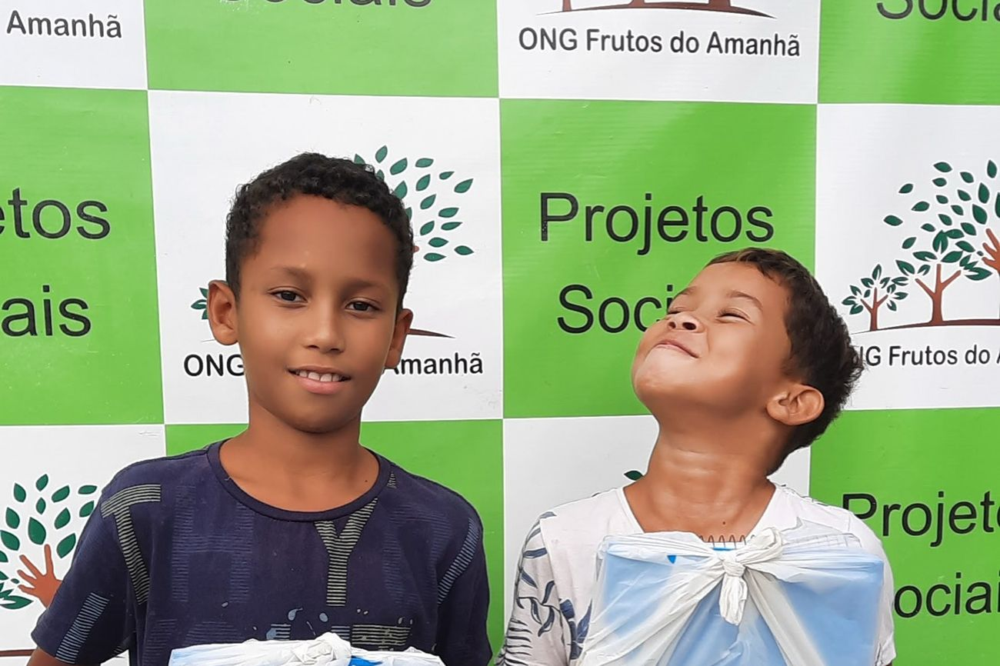

Segurança alimentar · mensal
Feirinha da Criança
Entrega mensal de cestas, frutas e verduras para famílias em situação de vulnerabilidade.
Campanha de material escolar · anual
Arrecadação de mochilas, cadernos e uniformes para que nenhuma criança atendida comece o ano letivo sem material.
A campanha abre no fim do ano, quando as escolas divulgam as listas de material. As famílias informam a série de cada criança e a ONG monta a lista do que precisa comprar ou arrecadar.
As entregas acontecem em janeiro, antes do início das aulas, para que ninguém chegue ao primeiro dia sem mochila ou caderno.
Na edição mais recente, 180 kits foram pedidos pelas famílias. A lista completa fica no perfil do Instagram da ONG durante todo o período da campanha.
Mochila, cadernos, estojo com lápis e canetas, régua, tesoura sem ponta, cola e uniforme, quando a escola exige. O conteúdo muda conforme a série da criança.

Doar em dinheiro permite comprar exatamente o que falta nas listas. Doar material pronto também ajuda, principalmente os itens que mais faltam.

Segurança alimentar · mensal
Entrega mensal de cestas, frutas e verduras para famílias em situação de vulnerabilidade.
Reforço escolar, oficinas culturais, esporte e geração de renda acontecem na sede durante toda a semana, no contraturno da escola.